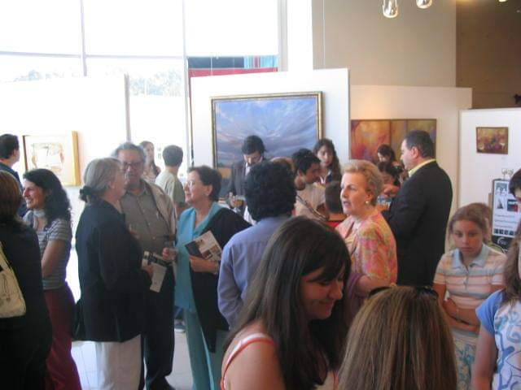
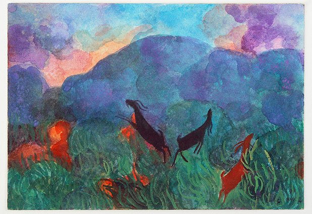
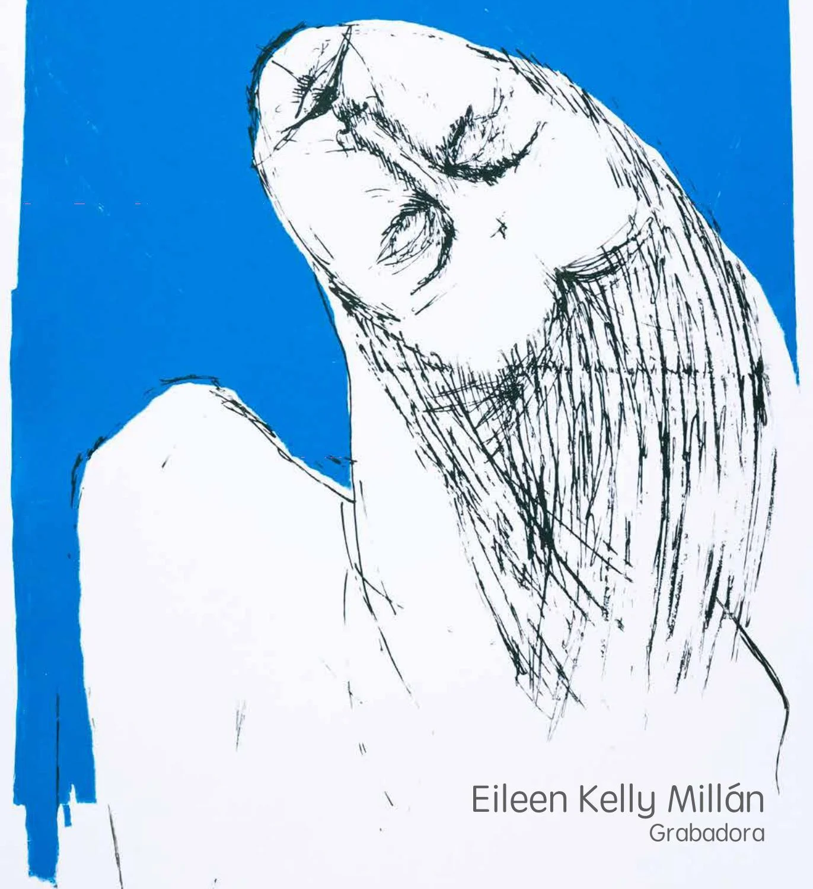
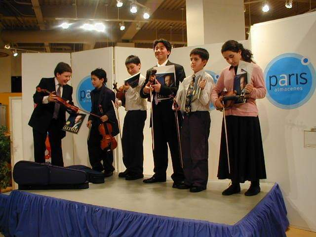
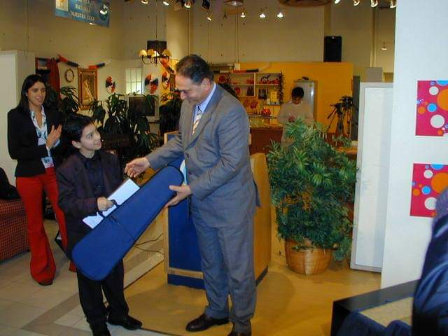

GALERÍA DE ARTE PENCOPOLITANA
Annemrie Maack e Iván Contreras.
Eduardo Meissner.
Público en Galería de Arte Pencopolitana.
Acuarela de Santos Chávez.
46 exposiciones de artistas regionales fueron exhibidas durante los 7 años de la Galería de Arte Pencopolitana, ubicada en el sexto piso del moderno edificio de Almacenes Paris en Concepción, empresa que auspició en su totalidad este espacio durante ese tiempo.
Rodrigo del Valle, quien en esa época era gerente de la multitienda que patrocinaba el espacio, me contó que "fue así como conocí la gestión de esta corporación y decidí apoyarla, financiando el proyecto de la galería. Era algo novedoso en aquel entonces. Fue inaugurada con una muestra de Iván Contreras el 17 de mayo de 2001 y finalizó con una exposición de Eduardo Meissner en noviembre de 2008".
La selección de los expositores estaba a cargo de los directores de la Corporación Teatro Pencopolitano: Mercedes Pujol, Annemrie Maack y Eduardo Meissner. La encargada de la instalación y promoción de las exhibiciones, era la periodista Pilar García.
Entre los artistas cuyas obras fueron exhibidas, estuvieron (en orden alfabético de apellidos):
- Janis Ananías
- Claudia Arrizaga
- Agustín Benelli
- Alejandra Bremer
- Sebastián Burgos
- Santos Chávez
- Iván Contreras
- Andrea Domke
- Albino Echeverría
- Cristian Fuica
- Patricia Gonzalez
- Luis Guzmán
- Flavia Hechem
- Ana María Hidalgo
- Patricio Inostroza
- Eileen Kelly
- Jorge Labarca
- Domingo Llanos
- Eduardo Meissner
- Edgardo Neira
- Francisco Olivares
- Marcela Osorio
- Rebeca Pedraza
- Marisol Pereira
- Mauricio Pezo
- Rosemarie Prim
- Pedro Retamal
- Rodrigo Retamal
- Alicia Rojas Aguayo
- Francisco Salas
- Luz Maria Sánchez
- Sandra Santander
- Claudia Sierralta
- Humberto Soto
- Leonor Soza
- Carolina Strmelj
- Renato Tillería
- Bernardita Valenzuela
- Carlos Valle
- Marcelo Vergara
- Marcela Villaseñor
APOYANDO A JÓVENES PRODRIGIOS
Un día, cuando estábamos en la oficina de Anibal Pinto, vino a verme Carlos Cifuentes, violinista y director de la Orquesta Juvenil de Hualpén. Me dijo que en su trabajo veía a muchos jóvenes y niños músicos y que, a veces por esas cosas de la vida, sus talentos se perdían. No había oportunidades para ellos o, simplemente, debían trabajar en otras áreas. Rara vez, tenían el apoyo de sus padres, quienes veían, en muchas ocasiones, la actividad musical como tiempo perdido, como un ocio que personas de menores recursos económicos no podían darse el lujo de aceptar.
Me explicó que, en ese momento, dirigía a un niño con un talento extraordinario. Tenía oído absoluto. Y pidió si lo podíamos recibir y hacer algo por él, pues necesitaba un violín propio y su familia no podía costearlo. Además, lo que más le complicaba a su profesor, era que el pequeño prodigio sólo contaba con el apoyo de su madre. Por el contrario, su padre se oponía a la determinación del niño de ser violinista profesional y dedicar su vida a la música. Su nombre era Jesús Rojas Tapia.
El día acordado, llegó Carlos Cifuentes, acompañado de su alumno y su madre. Nos llamó la atención cómo ese niño de apenas 10 años tenía tal talento como para impresionar a su maestro. Jesús no dijo nada, sólo mostraba asentimiento y resolución en su mirada. Entonces, decidimos apoyarlo, donando violines a él y a otros compañeros de la orquesta juvenil con el presupuesto que teníamos para la Galería de Arte Pencopolitana en Almacenes Paris. En agradecimiento, el profesor y los jóvenes prodigios nos ofrecieron un concierto en ese espacio.
Concierto Orquesta Juvenil de Hualpén con Carlos Cifuentes, director.
Donación de violines a orquestas juveniles.
Jesús Rojas Tapia recibe violín de Rodrigo del Valle.
Jesús Rojas Tapia.
Jesús, gracias al apoyo de su familia y comunidad, finalmente, pudo seguir su vocación y, hoy, es un reconocido violinista y también el director titular de la Orquesta y la Camerata de la Universidad San Sebastián. Ha contado que uno de sus sueños es fundar una orquesta de cámara para aportar al desarrollo cultural de Concepción y para no irse de este mundo sin haber dejado esa semilla. En una ocasión le preguntaron cómo se visualizaba en el futuro y dijo que con buena salud para que “mis manos me acompañen muchos años para seguir explorando y aprendiendo sobre el violín”.
En 2022, se le adjudicó la mención honorable del “International Music Festival” de la Isla Procida, en Italia, certamen de gran relevancia y referente de Europa. En la oportunidad, el músico interpretó obras de Brahms, Kreisler, Debussy y Piazzola. Cuatro años antes, había participado en el Concurso Andrea Postacchini, en Fermo, Italia, siendo el primer chileno en 25 años en lograrlo. En fin, es un violinista excepcional, agregando a ese talento la personalidad para dirigir y organizar orquestas. En una entrevista reciente, le preguntaron a qué persona admiraba y dijo que: “Jamás dudaría en decir que admiro a mi madre Sol”.
LA NAVIDAD PENCOPOLITANA

Eduardo Meissner, Concurso de Pintura Infantil.
Eileen Kelly, Concurso de Pintura Infantil.
Participantes del Concurso de Pintura Infantil.
Juan Eduardo King, quiso destacar que la Galería de Arte Pencopolitana fue precursora en llevar las obras de reconocidos artitas a espacios públicos masivos. De hecho, este proyecto penquista inició mucho antes que el Museo de Bellas Artes tuviese un lugar en el Mall del Trébol.
Metacho, participante del Concurso de Pintura Infantil.
También recordó con cariño el Concurso de Pintura Infantil Tarjeta Navideña Pencopolitana que "organizamos entre nuestros socios en diciembre de 2000. Recibimos 27 dibujos que fueron evaluados por un jurado de lujo, encabezado por Eduardo Meissner, a quien le llamó particularmente la atención por su paleta cromática y representación detallada del edificio, la obra de un niño de 7 años con el seudónimo Metacho (Franco Torres), quien imaginó una navidad nevada con el teatro a orillas del Bío Bío".
Las pinturas ganadoras fueron la portada de las tarjetas de saludo de fin de año de la corporación durante varios periodos. Todos los participantes recibieron un regalo de parte de Almacenes Paris y sus trabajos fueron enmarcados y exhibidos en la Galería de Arte Pencopolitana en la navidad de ese año. "También se realizó una ceremonia especial de entrega de los premios con la esperada visita del Viejo Pascuero en persona", recordó Rodrigo del Valle, quien agregó: "Me comprometí a tal punto con este proyecto, que me hice socio y he sido parte de su directorio hasta el día de hoy".
ALGUNOS CATÁLOGOS